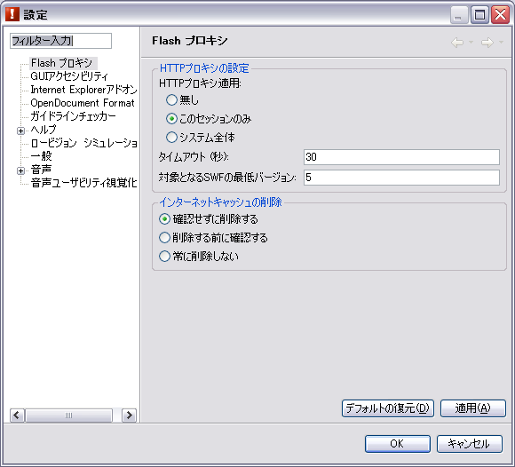
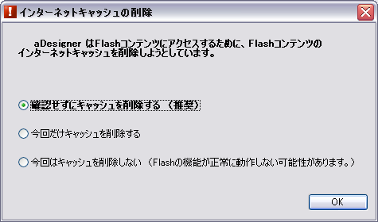

Flash アクセシビリティモード設定パネル
Flash プロキシ設定
Flash アウトラインビューを表示するための、プロキシの動作を設定するパネルです (図1)。

図1. Flash プロキシ設定パネル
各項目の詳細は、以下のとおりです。
HTTP プロキシの設定
- HTTP プロキシ適用:
- どのHTTP通信にプロキシを適用するかを設定します。
- 無し: すべての HTTP 通信にプロキシを適用しません。この場合 Flash アウトラインビューは使用できません。
- このセッションのみ: aDesigner に関する通信にのみプロキシを適用します。
- システム全体: すべての HTTP 通信に対してプロキシを適用します (例えば aDesigner 以外のブラウザでウェブページを閲覧する場合にも適用)。
- タイムアウト (秒):
- プロキシ使用時のコネクションタイムアウト時間を、非負の整数で指定します。デフォルト値は30(秒)です。
- 対象となる SWF の最低バージョン:
- 非負の整数を指定します。指定したバージョンより古い Flash コンテンツに対しては、通信を可能にするための処理を行いません。デフォルト値は5です。バージョン5未満のコンテンツでは ActionScript の機能が限られているため、aDesigner の機能では内部状態を取得することができません。
インターネットキャッシュの削除
aDesigner で Flash アウトラインビューを正しく動作させるためには、ページを閲覧する前にインターネットキャッシュを削除する必要があります。
ただし、キャッシュを削除するとブラウザのパフォーマンスに影響を与えますので、ここで aDesigner 起動時にインターネットキャッシュを削除するかどうかを選択します。
- 確認せずに削除する: 起動時に確認ダイアログを表示せずにキャッシュを削除します。
- 削除する前に確認する: 起動時にキャッシュを削除するか問い合わせる確認ダイアログが表示されます (図2)。
- 常に削除しない: 起動時にキャッシュを削除しません。この場合、Flash アウトラインビューを正しく動作させるためには、以下のいずれかの手順で明示的にキャッシュを削除する必要があります。
- メニューから 「ファイル」 > 「インターネットキャッシュを削除」 を選択します。
- インターネットオプションから削除します。 (以下の手順は Internet Explorer 6 の場合です)
- Internet Explorer で 「ツール」 > 「インターネットオプション」 を選択します。または、システムのコントロールパネルから 「インターネット オプション」 を選択します。
- 「全般」 タブの中のインターネット一時ファイル項目にある 「ファイルの削除」 ボタンを選択します。
- 「[Temporary Internet files] フォルダのすべてのファイルを削除しますか?」 というダイアログが表示されたら、「OK」 ボタンを選択します。
- インターネットオプション設定パネルに戻ったら、「OK」 ボタンを選択して閉じます。

図2. キャッシュ削除の確認ダイアログ
インデックスに戻る